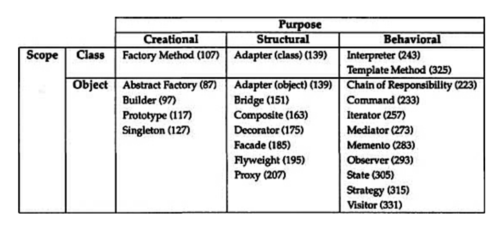
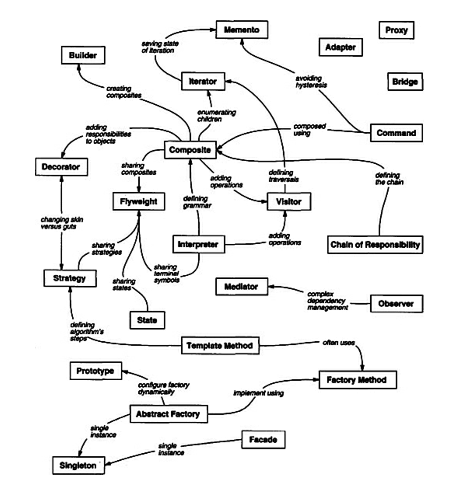

This post is going to record the note of design pattern of object-oriented programming. By reading the book, the following ability should be acquired:
- Finding Appropriate Objects: The hard part about OO design is de-composing a system into objects. Design patterns help you identify less-obvious abstractions and the objects that can capture them.
- Determining Object Granularity
- Specifying Object Interfaces:
The set of all signatures defined by an object’s operations is called theinterfaceto the object. - Specifying Object Implementations
The reference material is listed below:
- the Github Respository: https://github.com/tmrts/go-patterns
- textbook: Design Patterns: Elements of Reuseable Object-Oriented Software
Christopher Alexander says, “Each pattern describes a problem which occurs over and over again in our environment, and then describes the core of the solution to that problem, in such a way that you can use this solution a million times over, without ever doing it the same way twice”
Gamma, Erich. Design Patterns (Addison-Wesley Professional Computing Series) (p. 24). Pearson Education. Kindle Edition.
The design patterns can be classified into two criteria:
- The first criterion, called purpose, reflects what a pattern does.
- Creational: concerns the process of object creation.
- Structural: deals with the composition of classes or objects.
- Behaviroal: characterize the ways in which classes or objects interact and distribute responsibility.
- The second criterion, called scope, specifies whether the pattern applies primarily to classes or to objects.
- Class patterns deal with relationship between classes and their subclasses. These relationships are established through inheritance, so they are static – fixed at compile-time.
- Object patterns deal with object relationships, which can be changed at run-time and are more dynamic.
Creational class patterns defer some part of object creation to subclasses, while creational object patterns defer it to another object.
The structural class patterns use inheritance to compose classes, while the structural object patterns describe ways to assemble objects [I think Golang could only implement object patterns.].
The behavioral class patterns use inheritance to describe algorithms and flow of control, whereas the behavioral object patterns describe how a group of objects cooperate to perform a task that no single object can carry out alone.

And here is the relationship between the design patterns, which illustrates the possible collaboration among them.

Appendix
Principle of OOD
Programming to an Interface, not an Implementation
Favor object composition over class inheritance.
Diff between class & type
The class specifies the concrete implementation of the object. While the type here means the interfaces that the object belongs to.
An object’s class defines how the object is implemented. The class defines the object’s internal state and the implementation of its operations. In contrast, an object’s type only refers to its interface—the set of requests to which it can respond. An object can have many types, and objects of different classes can have the same type.